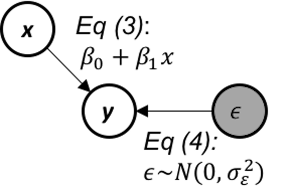
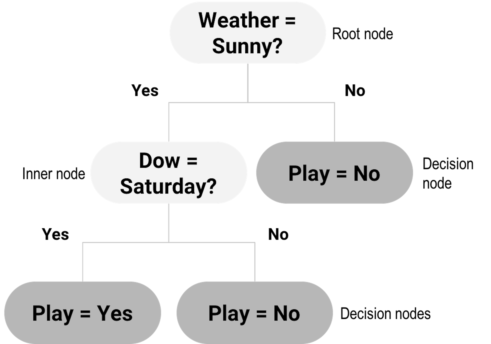
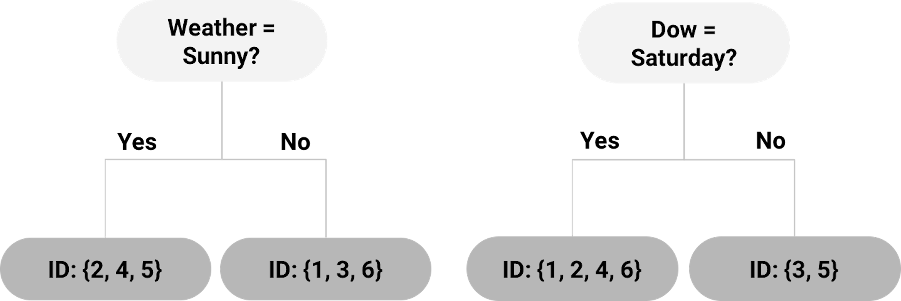
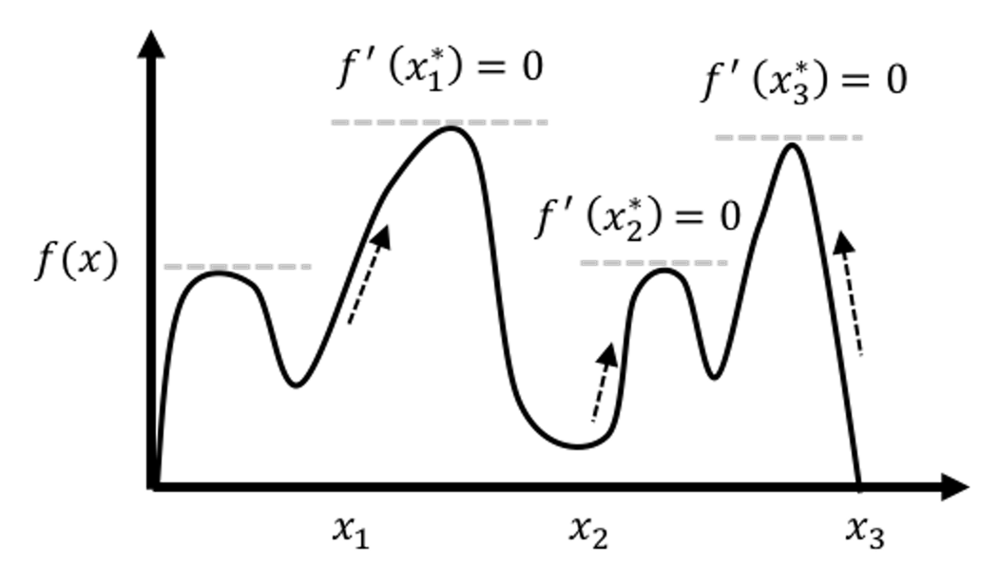
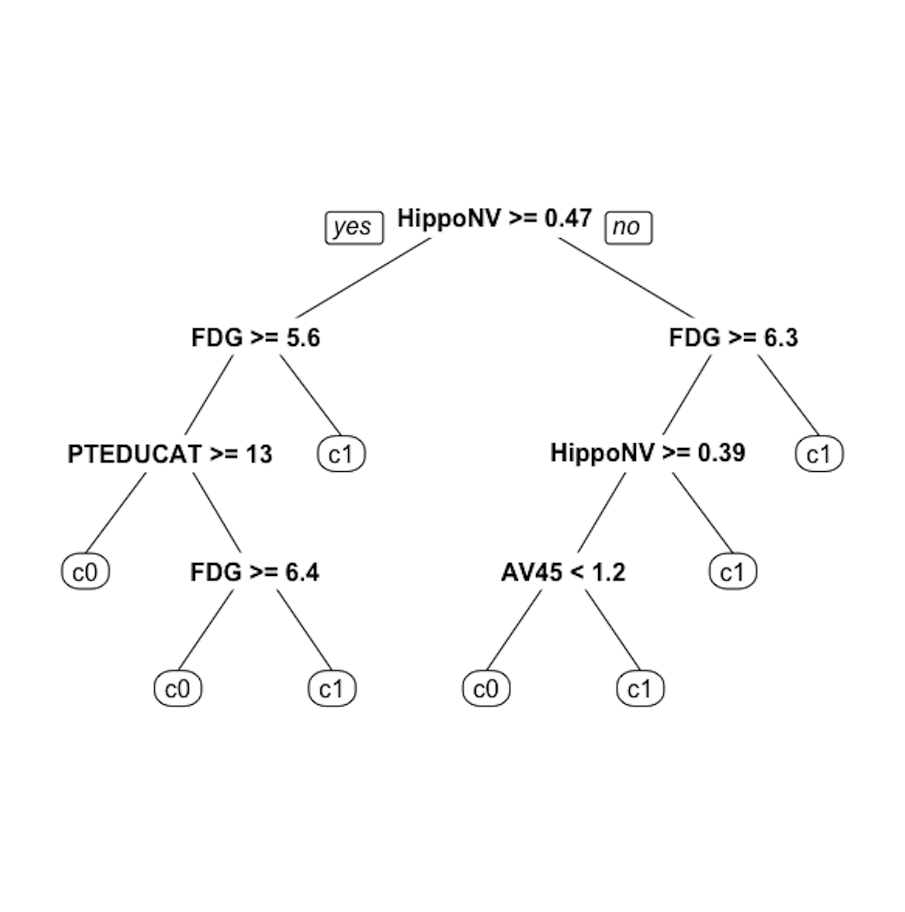
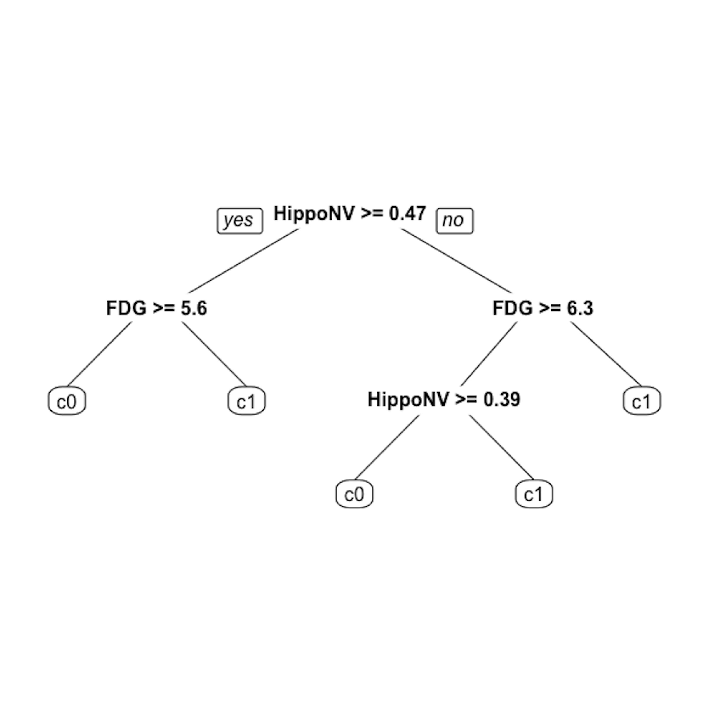

While the linear regression model is a typical data modeling method, the decision tree model represents a typical method in the category of algorithmic modeling35 The two types of modeling cultures are discussed in Table 1.. The linear regression model, given its many origins and implications, builds a model based on a mathematical characterization of the data-generating mechanism , which emphasizes an analytic understanding of the underlying system and how the data is generated from this system36 I.e., Eq. (3) explains how \(y\) is impacted by \(x\), and Eq. (4) explains how the rest of \(y\) is impacted by a random force. This is illustrated in Figure 16.. This pursuit of “mechanism” is sometimes too much to ask for if we know little about the physics but only the data, since understanding the mechanism of a problem needs experimental science and profound insights. And this pursuit of “mechanism” limits the applicability of a data modeling method when the data don’t seem to follow the data-generating mechanism prescribed by the model.
 Figure 16: The data-generating mechanism of a simple linear regression model
For example, Table 3 shows a dataset that has \(6\) observations, with two predictors, Weather and Day of week (Dow), and an outcome variable, Play. Assume that this is a dataset collected by a causal dog walker whose routine includes a sports field.
Table 3: Example of a dataset where a decision tree has a home game
| ID | Weather | Dow (day of weak) | Play |
|---|---|---|---|
| 1 | Rainy | Saturday | No |
| 2 | Sunny | Saturday | Yes |
| 3 | Windy | Tuesday | No |
| 4 | Sunny | Saturday | Yes |
| 5 | Sunny | Monday | No |
| 6 | Windy | Saturday | No |
It is hard to imagine that, for this dataset, how we can denote the two predictors as \(x_1\) and \(x_2\) and connect it with the outcome variable \(y\) in the form of Eq. (13), i.e.,
\[\begin{equation*} \begin{aligned} &\text{*Yes*} = \beta_0 + \beta_1 \text{*Rainy*} + \beta_2 \text{*Tuesday*} + \epsilon? \end{aligned} \end{equation*}\]
For this dataset, decision tree is a natural fit. As shown in Figure 17, a decision tree contains a root node , inner nodes , and decision nodes (i.e., the shaded leaf nodes of the tree in Figure 17). For any data point to reach its prediction, it starts from the root node, follows the splitting rules alongside the arcs to travel through inner nodes, then finally reaches a decision node. For example, consider the data point “Weather = Sunny, Dow = Saturday,” it starts with the root node, “Weather = Sunny?” then goes to inner node “Dow = Saturday?” then reaches the decision node as the left child node of the inner node “Dow = Saturday?” So the decision is “Play = Yes.”
 Figure 17: Example of a decision tree model
Compare with data modeling methods that hope to build a characterization of the data-generating mechanism , algorithmic modeling methods such as the decision tree mimic heuristics in human reasoning. It is challenging, while unnecessary, to write up a model of algorithmic modeling in mathematical forms as the one shown in Eq. (13). Algorithmic modeling methods are more semantics-oriented, and more focused on patterns detection and description.
Decision trees could be generated by manual inspection of the data. The one shown in Figure 17 could be easily drawn with a few inspection of the 6 data points in Table 3. Automatic algorithms have been developed that can take a dataset as input and generate a decision tree as output. We can see from Figure 17 that a key element of a decision tree is the splitting rules that guide a data point to travel through the inner nodes to reach a final decision node (i.e., to reach a decision).
A splitting rule is defined by a variable and the set of values the variable is allowed to take, e.g., in “Weather = Sunny?” “Weather” is the variable and “Sunny” is the set of value. The variable used for splitting is referred to as the splitting variable , and the set of value is referred to as the splitting value .
We start with the root node. Possible splitting rules are
“Weather = Sunny?”
“Dow = Saturday?”
“Dow = Monday?”
“Dow = Tuesday?”
Each of the splitting rules will lead to a different root node. Two examples are shown in Figure 18. Which one should we use?
Figure 18: Example of two root nodes
To help us decide on which splitting rule is the best, the concepts entropy of data and information gain (IG) are needed.
Entropy and information gain (IG). We can use the concept entropy to measure the homogeneity of the data points in a node of the decision tree. It is defined as
\[\begin{equation} e = \sum\nolimits_{i=1,\cdots,K}-P_i\log _{2} P_i. \tag{21} \end{equation}\]
where \(K\) represents the number of classes of the data points in the node37 E.g., in Table 3, there are \(K=2\) classes, Yes and No., and \(P_i\) is the proportion of data points that belong to the class \(i\). The entropy \(e\) is defined as zero when the data points in the node all belong to one single class38 What is more deterministic than this case?. And \(e = 1\) is the maximum value for the entropy of a dataset, i.e., try an example with two classes, where \(P_1 = 0.5\) and \(P_2 = 0.5\).39 What is more uncertain than this case?
A node that consists of data points that are dominated by one class (i.e., entropy is small) is ready to be made a decision node. If it still has a large entropy, splitting it into two child nodes could help reduce the entropy. Thus, to further split a node, we look for the best splitting rule that can maximize the entropy reduction. This entropy reduction can be measured by IG, which is the difference of entropy of the parent node and the average entropy of the two child nodes weighted by their number of data points. It is defined as
\[\begin{equation} IG = e_s - \sum\nolimits_{i=1,2} w_i e_i. \tag{22} \end{equation}\]
Here, \(e_s\) is the entropy of the parent node, \(e_i\) is the entropy of the child node \(i\), and \(w_i\) is the number of data points in the child node \(i\) divided by the number of data points in the parent node.
For example, for the left tree in Figure 18, using the definition of entropy in Eq. (21), the entropy of the root node is calculated as
\[-\frac{4}{6} \log _2 \frac{4}{6} - \frac{2}{6}\log _2 \frac{2}{6}=0.92.\]
The entropy of the left child node (“Weather = Sunny”) is
\[-\frac{2}{3} \log _2 \frac{2}{3} - \frac{1}{3} \log _2 \frac{1}{3}=0.92.\]
The entropy of the right child node (“Weather != Sunny”) is \(0\) since all three data points (ID = \(1,3,6\)) belong to the same class.
Then, using the definition of IG in Eq. (22), the IG for the splitting rule “Weather = Sunny” is
\[IG = 0.92 - \frac{3}{6} \times 0.92 - \frac{3}{6} \times 0=0.46.\]
For the tree in Figure 18 (right), the entropy of the left child node (“Dow = Saturday”) is
\[-\frac{2}{4} \log _2 \frac{2}{4} - \frac{2}{4} \log _2 \frac{2}{4} = 1.\]
The entropy of the right child node (“Dow != Saturday”) is \(0\) since the two data points (ID = 3,5) belong to the same class.
Thus, the IG for the splitting rule “Dow = Saturday” is
\[IF=0.92-\frac{4}{6} \times 1 - \frac{2}{6} \times 0=0.25.\]
As the IG for the splitting rule “Weather = Sunny” is higher, the left tree in Figure 18 is a better choice to start the tree.
Recursive partitioning. The splitting process discussed above could be repeatedly used, until there is no further need to split a node, i.e., the node contains data points from one single class, which is ideal and almost would never happen in reality; or the node has reached the minimum number of data points40 It is common to assign a minimum number of data points to prevent the tree-growing algorithm to generate too tiny leaf nodes. This is to prevent “overfitting” . Elaborated discussion of overfitting will be provided in Chapter 5.. This repetitive splitting process is called recursive partitioning.
For instance, the left child node in the tree shown in Figure 18 (left) with data points (ID = \(2,4,5\)) still has two classes, and can be further split by selecting the next best splitting rule. The right child node has only one class and becomes a decision node labeled with the decision “Play = No.”
This greedy approach, like other greedy optimization approaches, is easy to use. One limitation of greedy approches is that they may find local optimal solutions instead of global optimal solutions. The optimal choice we made in choosing between the two alternatives in Figure 18 is a local optimal choice, and all later nodes of the final tree model are impacted by our decision made on the root node. The optimal root node doesn’t necessarily lead to the optimal tree41 In other words, an optimal tree is the optimal one among all the possible trees, so an optimal root node won’t necessarily lead to an optimal tree..
An illustration of the risk of getting stuck in a local optimal solution of greedy optimization approaches is shown in Figure 19. Where the algorithm gets started matters to where it ends up. For this reason, decision tree algorithms are often sensitive to data, i.e., it is not uncommon that a slight change of the dataset may cause a considerable change of the topology of the decision tree.
 Figure 19: A greedy optimization approach starts its adventure from an initial solution. Here, \(x_1\), \(x_2\), \(x_3\) are different initial solutions of \(3\) usages of the optimization approach, and \(3\) optimal solutions are found, while only one of them is globally optimal.
Tree pruning. To enhance the robustness of the decision tree learned by data-driven approaches such as the recursive partitioning, pruning methods could be used to cut down some unstable or insignificant branches. There are pre-pruning and post-pruning methods. Pre-pruning stops growing a tree when a pre-defined criterion is met. For example, one can set the depth of a tree (i.e., the depth of a node is the number of edges from the node to the tree’s root node; the depth of a tree is the maximum depth of its leaf nodes), or the minimum number of data points at the leaf nodes. These approaches need prior knowledge, and they may not necessarily reflect the characteristics of the particular dataset. More data-dependent approaches can be used. For example, we may set a minimum IG threshold to stop growing a tree when the IG is below the threshold. This may cause another problem, i.e., a small IG at an internal node does not necessarily mean its potential child nodes can only have smaller IG values. Therefore, pre-pruning can cause over-simplified trees and thus underfitted tree models. In other words, it may be too cautious.
In contrast, post-pruning prunes a tree after it is fully grown. A fully grown model aggressively spans the tree, i.e., by setting the depth of the tree as a large number. To pursue a fully grown tree is to mitigate the risk of underfit. The cost is that it may overfit the data, so post-pruning is needed. Post-pruning starts from the bottom of the tree. If removing an inner node (together with all the descendant nodes) does not increase the error significantly, then it should be pruned. The question is how to evaluate the significance of the increase of error42 Interested readers may find the discussion in the Remarks section useful..
We will refer readers to Chapter 5 for understanding more about concepts such as empirical error and generalization error . Understanding the difference between them is a key step towards maturity in data analytics. Like the difference between money and currency, the difference will be obvious to you as long as you have seen the difference.
Extensions and other considerations.
In our data example in Table 3 we only have categorical variables, so candidate splitting rules could be defined relatively easier. For a continuous variable, one approach to identify candidate splitting rules is to order the observed values first, and then, use the average of each pair of consecutive values for splitting.
If the outcome variable is continuous, we can use the variance of the outcome variable to measure the “entropy” of a node, i.e.,
\[v= \sum\nolimits_{n=1}\nolimits^N \left(\bar y - y_n\right)^2 ,\]
where \(y_{n=1,\cdots,N}\) are the values of the outcome variable in the node, and \(\bar y\) is the average of the outcome variable. And the information gain can be calculated similarly.
rpart is cp, i.e., it sets a value such that all splits need to improve the IG by at least a factor of cp to be approved. This pre-pruning strategy works well in many applications.The 6-Step R Pipeline. We use DX_bl as the outcome variable that is binary44 In DX_bl, 0 denotes normal subjects; 1 denotes diseased subjects.. We use other variables (except ID, TOTAL13 and MMSCORE) to predict DX_bl.
Step 1 loads the needed R packages and data into the workspace.
# Key package for decision tree in R:
# rpart (for building the tree);
# rpart.plot (for drawing the tree)
library(RCurl)
library(rpart)
library(rpart.plot)
# Step 1 -> Read data into R workstation
url <- paste0("https://raw.githubusercontent.com",
"/analyticsbook/book/main/data/AD.csv")
data <- read.csv(text=getURL(url))
Step 2 is about data preprocessing.
# Step 2 -> Data preprocessing
# Create your X matrix (predictors) and
# Y vector (outcome variable)
X <- data[,2:16]
Y <- data$DX_bl
# The following code makes sure the variable "DX_bl"
# is a "factor".
Y <- paste0("c", Y)
# This line is to "factorize" the variable "DX_bl".
# It denotes "0" as "c0" and "1" as "c1",
# to highlight the fact that
# "DX_bl" is a factor variable, not a numerical variable
Y <- as.factor(Y) # as.factor is to convert any variable
# into the format as "factor" variable.
# Then, we integrate everything into a data frame
data <- data.frame(X,Y)
names(data)[16] = c("DX_bl")
set.seed(1) # generate the same random sequence
# Create a training data (half the original data size)
train.ix <- sample(nrow(data),floor( nrow(data)/2) )
data.train <- data[train.ix,]
# Create a testing data (half the original data size)
data.test <- data[-train.ix,]

Figure 20: The unpruned decision tree to predict DX_bl
Step 3 is to use the rpart() function in the R package rpart to build the decision tree.
# Step 3 -> use rpart to build the decision tree.
tree <- rpart(DX_bl ~ ., data = data.train)Step 4 is to use the prp() function to plot the decision tree45 prp() is a capable function. It has many arguments to specify the details of how the tree should be drawn. Use help(prp) to see details.
# Step 4 -> draw the tree
prp(tree, nn.cex = 1)And the decision tree is shown in Figure 20.
Step 5 is to prune the tree using the R function prune(). Remember that the parameter cp controls the model complexity46 A larger cp leads to a less complex tree..
Let us try cp \(= 0.03\). This leads to a decision tree as shown in Figure 21.
# Step 5 -> prune the tree
tree <- prune(tree,cp=0.03)
prp(tree,nn.cex=1)

Figure 21: The pruned decision tree model to predict DX_bl of the AD data with cp = 0.03
Step 6 is to evaluate the trained model by predicting the testing data.
# Step 6 -> Predict using your tree model
pred.tree <- predict(tree, data.test, type="class")And we can evaluate the prediction performance using error rate.
# The following line calculates the prediction error
# rate (a number from 0 to 1) for a binary classification problem
err.tree <- length(which(pred.tree !=
data.test$DX_bl))/length(pred.tree)
# 1) which(pred.tree != data$DX_bl) identifies the locations
# of the incorrect predictions;
# 2) length(any vector) returns the length of that vector;
# 3) thus, the ratio of incorrect prediction over the total
# prediction is the prediction error
print(err.tree)